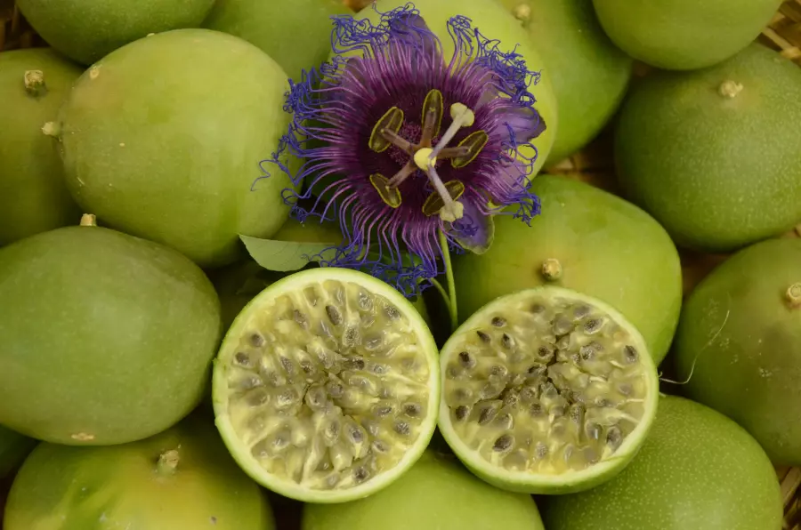

O maracujá da Caatinga (nome científico: Passiflora cincinnata), também conhecido como maracujá do mato, é uma fruta nativa do semiárido nordestino.
É resistente à seca e também a uma série de pragas que atingem o maracujá comum.
Sua casca é esverdeada e sua polpa branca, onde se escondem dezenas de sementes.
O sabor da polpa é mais marcante em termos de doçura, mas também de acidez, do que o maracujá comum, além de ser extremamente aromático.
Sua flor é belíssima e muito delicada, além de exalar um aroma adocicado que atrai as abelhas.
- O maracujá da Caatinga é amplamente conhecido pelas suas propriedades medicinais, em especial, por ter efeito calmante e relaxante.
- É uma rica fonte de potássio, ferro, fósforo, cálcio e vitaminas A, C e do complexo B.
- A combinação de nutrição com sabor e aroma fazem do maracujá do mato matéria-prima para produção de produtos como sucos, polpas, geleias e sorvetes.